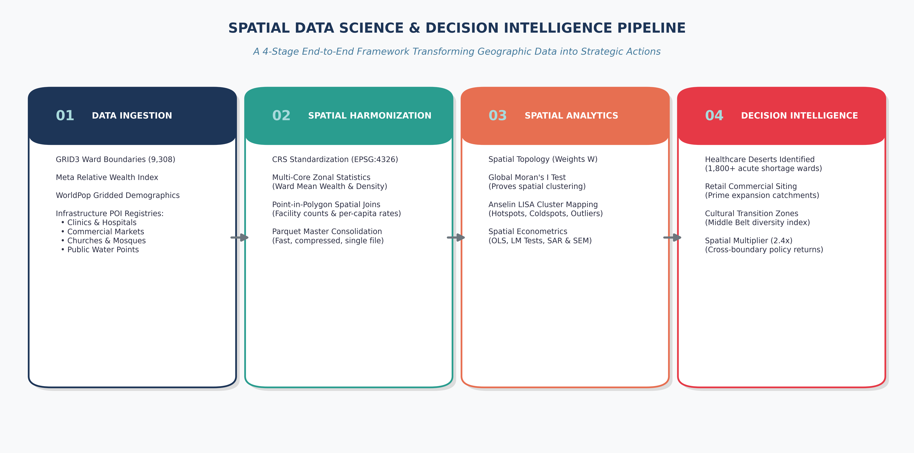

Advanced Spatial Statistics & Decision Science
How Location Data and Spatial Modeling Drive Smarter Decisions Across Every Sector
Every sector starts with a question. Spatial statistics gives the answer.
Covering Disease Epidemiology (Malaria), Healthcare Deserts, Geomarketing, Cultural Geography, and Spatial Econometrics across 9,308 Nigerian Wards.
A Production-Grade Open Source Decision Support Framework
The Big Idea: Why Traditional Statistics Fails in the Real World
The Fallacy of the Average
Traditional analytics uses state or national averages. A state can look moderately healthy on paper, while having hundreds of wards with ZERO clinics. Decisions based on averages waste money by funding the wrong places.
Tobler's First Law of Geography
"Near things are more related than distant things." (Tobler, 1970). Events in one ward do not stay in that ward. Pathogens spread, shoppers travel, and investments spill over across borders.
Why Spatial Statistics Must Come BEFORE Machine Learning
The Trap: Spatial Data Leakage in ML
- Random train/test splits leak neighboring data, creating fake 95% accuracy that fails when deployed in new regions.
- Tree models (XGBoost) chop coordinates into rigid square boxes, ignoring continuous spatial connectivity.
- Off-the-shelf ML cannot calculate causal policy multipliers.
The Solution: Spatial Stats First
- Spatial Feature Engineering: Compute spatial lags
Wyand distance decays before training ML. - Spatial Block Cross-Validation: Split data by geographic clusters to guarantee true generalization.
- Spatial Econometrics: Test whether spatial spillovers exist using Lagrange Multiplier (LM) tests.
End-to-End Decision Pipeline: From Raw Data to Actions

Formula 1: The Spatial Weights Matrix (W)
Connecting Geography Mathematically
Row-Standardization: Makes spatial calculations independent of raw neighbor counts, placing all wards on an equal scale.
Queen vs. K-Nearest Neighbors (KNN)
Queen Contiguity: Wards are neighbors if they share a boundary border or point vertex.
KNN-5 (Recommended): Connects each ward to its 5 closest neighbors, preventing isolated islands from breaking matrix computations.
Formula 2: The Spatial Lag Operator [Wy]
The Equation & Definition
Simple Intuition: [Wy]i is the spatially weighted neighborhood average of variable y around focal ward i.
Real-World Applications
Public Health: If Ward i has 0 clinics, but [W · Clinics] = 6.0, patients can walk to neighboring clinics. If [W · Clinics] = 0.0, it is an isolated Healthcare Desert.
Geomarketing: Measuring surrounding consumer purchasing power [W · Wealth] before opening a supermarket.
Formula 3: Global Moran's I (Testing for Spatial Clustering)
The Mathematical Formula
Null Hypothesis (H0): Values are randomly scattered across the country.
Expected Value under H0: E[I] = -1 / (n - 1) → 0.
Results across 9,308 Wards
- Wealth (RWI): I = 0.684 (z = 112.4, p = 0.001) → Extreme wealth clustering
- Malaria Prevalence: I = 0.886 (z = 140.5, p = 0.001) → Intense disease corridors
- Churches Distribution: I = 0.812 (z = 138.2, p = 0.001) → Clear North-South sorting
Formula 4: Local Moran's I (LISA) & Hotspots
Local Decomposition: Ii
Tests each individual ward against local spatial randomness to isolate exact geographic clusters.
The 4 Core Quadrants
- High-High (Hotspot): High focal value in high neighborhood.
- Low-Low (Coldspot): Low focal value in low neighborhood.
- High-Low (Outlier): Island of wealth in low neighborhood.
- Low-High (Outlier): Pocket of deprivation inside affluent zone.
National Wealth Clusters: Anselin LISA Map

Sector 1: Public Health & Healthcare Deserts
The Question & Answer
THE QUESTION: Where are populations trapped with zero primary healthcare clinics?
THE ANSWER: We identified 1,800+ Healthcare Deserts: wards with over 17,000 residents and 0 registered health facilities.
Over 30 million people live in these wards. Mobile clinics and maternal care can be routed directly to them.

Sector 2: Disease Epidemiology & Malaria Surveillance
The Question & Answer
THE QUESTION: Does malaria transmission cluster in distinct environmental corridors, and do local clinics buffer against the disease?
THE ANSWER: Malaria prevalence exhibits extreme spatial clustering (Moran's I = 0.886, p = 0.001). Southern riverine basins form endemic hotspots (PfPR > 40%). Wards with higher clinic rates experience significantly lower parasite rates.

Sector 3: Geomarketing & Retail Expansion Strategy
The Question & Answer
THE QUESTION: Where can modern retail supermarkets, FMCG brands, and fintechs expand without crowded competition?
THE ANSWER: By cross-referencing Relative Wealth (RWI) with market density, we isolate Tier 2 Wards (High Wealth, Low Markets) as prime expansion catchments.

Sector 4: Cultural Geography & Community Cohesion
The Question & Answer
THE QUESTION: How are faith institutions distributed, and where are the cultural transition zones of high co-presence?
THE ANSWER: The Shannon Entropy Diversity Index identifies the Middle Belt (Plateau, Benue, Kaduna South) as intense coexistence zones. Health vaccination drives must engage dominant local faith leaders.

Sector 5: Public Utilities (WASH) & Infrastructure Equity
The Question & Answer
THE QUESTION: How unequal is clean water distribution, and which communities need urgent boreholes?
THE ANSWER: Lorenz Curve analysis reveals severe inequality: Gini = 0.72 for clean water points. The Ward Priority Index (WPI) synthesizes water, health, and poverty deficits into 4 Action Tiers.

Spatial Econometrics: Why Ordinary Least Squares (OLS) Fails
The OLS Failure
When units are georeferenced, residuals cluster spatially. If spatial lag is omitted, β is biased and wrong. If spatial error exists, standard errors are deflated, causing false policy claims.
The Solution: Lagrange Multiplier (LM) Tests
We test OLS residuals using Anselin's LM-Lag and LM-Error tests. For Nigeria, residual Moran's I is 0.421 (p < 0.001), demanding Spatial Lag (SAR) or Spatial Error (SEM) models.
The Spatial Lag Model (SAR) & The 2.4x Multiplier
The Mathematical Model
ρ captures endogenous peer spillovers across neighboring wards.
The 2.4x Spatial Multiplier
Our regression found: ρ = 0.5842 (p < 0.0001).
Policy Rule: For every 1.0 unit of wealth created in a ward by building a market or clinic, an additional 1.405 units spill over into surrounding wards!
The Spatial Error Model (SEM): Unobserved Shocks
The Mathematical Formulation
λ captures spatial autocorrelation in unobserved factors: regional climate, soil quality, or shared administrative shocks.
Results for Nigeria
Empirical parameter: λ = 0.6124 (p < 0.0001).
Correcting for spatial error autocorrelation dramatically improves model fit, reducing AIC by over 3,850 points compared to classical OLS.
Comparing Econometric Models Across 9,308 Wards
| Model Specification | Pseudo R² | Log-Likelihood | AIC | Spatial Parameter |
|---|---|---|---|---|
| Classical OLS | 0.2841 | -5,812.4 | 11,636.8 | None (Moran e = 0.421) |
| Spatial Lag (SAR) | 0.5318 | -3,941.2 | 7,896.4 | ρ = 0.5842 (p < 0.0001) |
| Spatial Error (SEM) | 0.5462 | -3,884.6 | 7,781.2 | λ = 0.6124 (p < 0.0001) |
Spatial models explain almost twice as much variance as classical OLS and eliminate residual spatial bias.
15 Real-World Enterprise & Policy Use Cases
Public Health & Enterprise
- Disease Surveillance (Malaria/Cholera clustering)
- Healthcare Facility Siting & Desert Eradication
- Clean Water (WASH) Borehole Prioritization
- Primary Education & School Dropout Prevention
- Commercial Supermarket Catchment Planning
- Fintech POS Agency Banking Siting
- Telecommunications 4G/5G Tower Siting
- Off-Grid Solar Mini-Grid Deployment
Civic, Safety & Governance
- Cultural Cohesion & Peacebuilding
- Emergency Services (Police/Fire response radiuses)
- Urban Heat Island & Climate Resilience
- Agricultural Supply Chains & Grain Silo Siting
- Real Estate & Spatial Hedonic Land Pricing
- Transport Corridors & Road Multiplier Analysis
- Electoral Logistics & Polling Unit Administration
Summary: How to Deploy This Framework
Key Takeaways
• Stop using flat averages—look at localized spatial distributions.
• Account for spillovers: policy capital returns 2.4x due to neighboring gains.
• Start with a clear question / hypothesis before modeling.
Access & Reproducibility
• Fast Track (5 seconds): Unpack data/processed_data_bundle.zip (9.2 MB).
• Notebooks: Explore notebooks/00 to 03.
• GitHub Repository: https://github.com/SammyGIS/dsn_advanced_spatial_stats.git